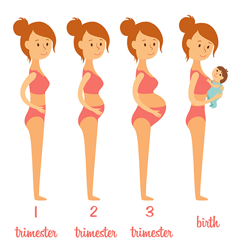

योग
गर्भावस्था के दौरान आपका शरीर कई बदलावों से गुजरता है, जो मानसिक और शारीरिक रूप से आप पर तनाव पैदा करता है। स्वस्थ मन और शरीर को बनाए रखने का एक तरीका जन्मपूर्व योग है।
जन्मपूर्व योग गर्भवती महिलाओं के लिए शक्ति और लचीलेपन को बढ़ाने के लिए, पोज़ पर केंद्रित है।
जन्मपूर्व योग समग्र कल्याण के लिए अच्छा है। यह व्यायाम का एक रूप है जो आपकी गर्भावस्था के कल्याण के लिए भी बोलता है।
प्रसवपूर्व योग आप के लिए इलाज हो सकता है यदि आप कमर दर्द, मतली, अनिद्रा, सिर दर्द, सांस की तकलीफ,
और कार्पल टनल सिंड्रोम जैसे सामान्य गर्भावस्था असुविधा से पीड़ित हैं। मांसपेशियों को खींचकर और टोनिंग करके, आप पूरे
शरीर में स्वस्थ तरीके से रक्त को प्रसारित करने में मदद कर सकते हैं।
इसके अलावा, गहरी सांस लेने से आपके बच्चे को और आपकी मांसपेशियों को बहुत जरूरी ऑक्सीजन मिल सकती है।
शरीर में परिवर्तन
एक महिला का शरीर गर्भावस्था के नौ महीनों के दौरान कई परिवर्तनों से गुजरता है।
इन भौतिक परिवर्तनों में से कुछ दिखाई देते हैं, जैसे कि एक विस्तृत पेट और वजन बढ़ना,
जबकि अन्य अच्छी तरह से जाना जाता है, जैसे कि एक बढ़े हुए गर्भाशय, सुबह की बीमारी और पीठ दर्द।
हालाँकि, कुछ शारीरिक परिवर्तन अप्रत्याशित हो सकते हैं और कुछ महिलाओं को आश्चर्यचकित कर सकते हैं।
"यह उल्लेखनीय है कि एक महिला का शरीर गर्भावस्था को कैसे समायोजित करता है"
गर्भावस्था के दौरान एक महिला के स्तन का आकार और उसके ब्रा का आकार कई बार बदल सकता है।
रक्तस्राव मसूड़ों एक सामान्य गर्भावस्था की शिकायत है, और वे संक्रमण के लिए एक खुला पोर्टल बना सकते हैं।

सावधानियां
जब आप गर्भवती होती हैं, तो कुछ बुनियादी सावधानियां होती हैं जिन्हें आपको लेना चाहिए
अपने बच्चे और अपने स्वास्थ्य दोनों को सुनिश्चित करें।
गर्भावस्था की पहली तिमाही में प्रगति के बारे में बहुत कुछ निर्धारित किया जाएगा
आपकी गर्भावस्था के बाद के चरणों में और आपके बच्चे के स्वास्थ्य में।
हालाँकि, यह आनंददायक सवारी आपके जीवन की सबसे अच्छी यात्रा होने वाली है, आपको खुद को तैयार करने की आवश्यकता है
गर्भावस्था के लिए। प्रारंभिक गर्भावस्था के दौरान सावधानी सहित तैयारी के साथ आप नियंत्रित करने में सक्षम होंगे
आपकी गर्भावस्था और किसी भी जटिलता से बचें।
गर्भावस्था के दौरान सावधानी बरतने से कई समस्याएं दूर रहेंगी।